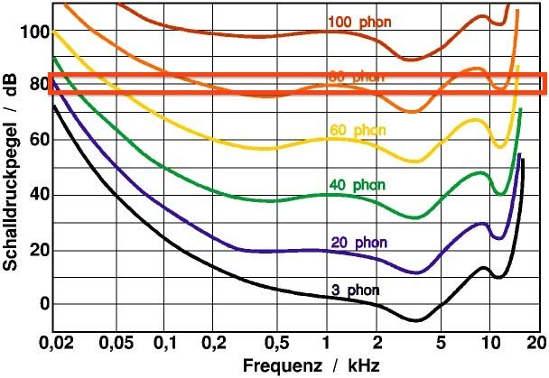

Isophon-Experiment
Referenzton auf angenehme Lautheit "kalibrieren"
Aktuellen Vergleichston gleich laut einstellen
"Weiter" drücken
Referenzton
+
Vergleichston
(1/10)
-
Weiter
Passen die Ergebnisse grob zur 60 phon-Isophone?
